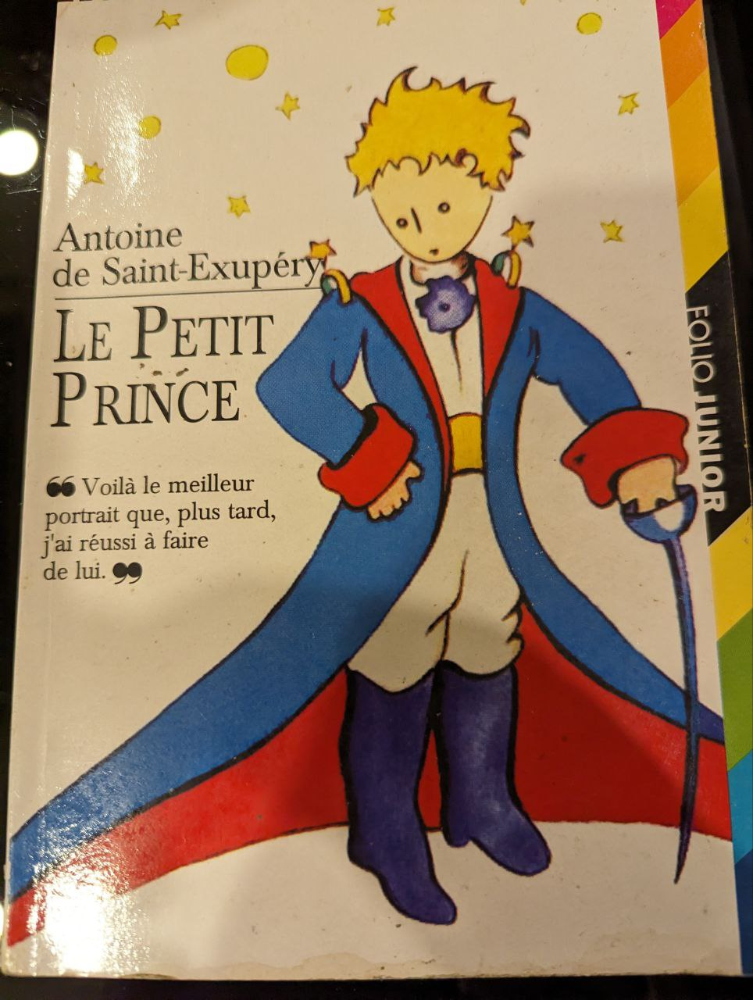

Ngày 2022-10-06, tức 1 năm, 2 tháng trước, blog đã đăng 1 bài viết với tiêu đề Đọc một quyển sách 400 nghìn tốn bao nhiêu? với kết luận "Khi mua một cuốn sách, bạn sẽ phải trả thêm một chi phí không nhỏ để đọc nó". Nhưng đây không phải lý do để không đọc.
Sau bài viết ấy, tôi bắt đầu một nhiệm vụ gian truân bậc nhất trong đời mình: đọc hết quyển Anathem by Neal Stephenson dày 937 trang, bằng tiếng Anh, sau 4 tháng với mỗi ngày dành khoảng 1 tiếng đọc, nhiệm vụ hoàn thành.
Việc đọc xong quyển sách này mang lại sức mạnh ảo tưởng bản thân rất hữu ích: sẵn sàng đọc bất cứ quyển sách nào trên 500 trang sẽ không còn là đáng sợ nữa, VD:
- Moby Dick ~ 700 trang
- Don Quixote ~ 1000 trang
- War And Peace ~ 1200 trang ...
Giống như nếu bạn đã chạy Marathon 42km rồi, thì chạy 20 km hay 30km hay 1 cái marathon khác không còn là điều khó khăn.
Nhưng mọi hành trình đều xuất phát từ những bước chân đầu tiên... với một quyết định cá nhân kỳ lạ là "chỉ đọc truyện bằng chính ngôn ngữ gốc, không đọc sách dịch" (với ngoại lệ tiếng Trung tiếng Nhật hay ... tiếng Phạn).
Thất bại đầu tiên: Lord Of The Rings
Giống như mọi người muốn "thành công", tôi làm theo người thành công khác. Truyền thuyết mạng kể rằng Linus Torvards (tác giả của Linux/Git) là một người Phần Lan (Finnish) và không giỏi tiếng Anh. Ông ôm 1 quyển từ điển để đọc hết bộ Lord Of The Rings và từ đó thành thạo tiếng Anh như người bản địa.
Mua nguyên bộ Lord Of The Rings 500k 3 quyển không phải chuyện khó. Đọc hết 100 trang đầu mới khó. Năm 2015, sau bao nỗ lực đến được trang 100, tôi bỏ cuộc và cất 3 quyển truyện bìa đẹp vào góc rồi không bao giờ mở ra.
Dù có thể đọc tài liệu tiếng Anh ngành IT hay báo chí không khó khăn gì, đọc truyện là việc hoàn toàn khác. Khó hơn nữa là:
- tiểu thuyết cổ điển (>100 năm) với rất nhiều từ lạ
- truyện khoa học viễn tưởng như Lord Of The Rings, với nhiều từ khó/cổ, thậm chí có hẳn ngôn ngữ riêng phát minh cùng bộ truyện.
Kết luận? copy y hệt người thành công thì không thành công mà chỉ thành gà.
Thất bại thứ hai: hoàng tử bé
Ti toe học được 3 tháng tiếng Pháp trên "Duolingo", boujour common ca va? mua được quyển "Le Petit Prince" mỏng dính, nhưng sau không ít cố gắng, đọc được 5 trang, rồi cũng bỏ cuộc.

Thành công đầu tiên - Gone girl 400 trang
Vì một lý do kì lạ nào đó, tôi quyết định đọc cuốn truyện siêu hot thời 2015 này trên máy Kindle mới mua. Kindle đúng là 1 trợ thủ siêu đắc lực, chỉ với 1 ngón tay dí vào chữ là ra ngay từ điển. Sau vài tháng cũng lần đầu tiên đọc hết 1 quyển truyện tiếng Anh.
PS: trong thời gian này, dù cũng dùng Kindle, nhưng đã fail ngay sau trang đầu tiên của "Cloud Atlas" với tỉ lệ 80% từ mới trên mỗi câu. Và sau 30 trang đầu của "Ender's game".
Những thành công tiếp theo
Nhiều cuốn sách free tải từ trang https://standardebooks.org/ - những sách đã hết hạn bản quyền, thậm chí ở Việt Nam cũng bán đầy ngoài hiệu sách với giá chung 50 nghìn:
- Strange Case of Dr. Jekyll and Mr. Hyde
- Siddhartha by Hermann Hesse
- The Invisible Man by H. G. Wells
- The Adventures of Huckleberry Finn by Mark Twain
- Heart of darkness by Joseph Conrad
- Great Expectations by Charles Dickens
Đa phần là tiểu thuyết cổ điển, khá khó đọc, mà đọc nhiều thì cũng dần quen.
Truyện dễ đọc nhất? Harry Potter and the Prisoner of Azkaban, thẳng tuột 3 ngày và khá bất ngờ khi chỉ phải mở từ điền 1-2 lần, nhưng rồi cũng không quá ngạc nhiên khi đây là truyện dành cho thanh thiếu niên.
The Internet Speculative Fiction Database
Đa phần sách đã đọc thuộc thể loại khoa học viễn tưởng (scifi), có nguyên 1 website để lên xem pick quyển nào đọc https://www.isfdb.org/cgi-bin/stats.cgi?12 rồi lên tiki mua về.
Xem phim đúng là tiết kiệm thời gian
Một bộ film cùng lắm dài 3 tiếng, đọc 1 quyển sách với tốc độ 30 trang / giờ, đâu đó cũng phải 20 tiếng mới xong 1 quyển 500 trang. Nhưng truyện để chỗ cho đầu óc được tưởng tượng, và đi vào chi tiết hơn rất nhiều so với phim.
Đọc truyện cũng như là xem phim
Đọc truyện mang lại giây phút thư giãn, đôi chút nghĩ suy,... chứ không có gì để TRÍ THỨC hơn xem phim.
Đọc sách học chắc là chuyện khác.
Sách được đánh giá cao mà đọc không thấy thú vị?
Hầu hết các truyện dài đều không hấp dẫn ngay từ đầu, đa phần dành thời gian để xây dựng thế giới, không gian, nên thường mất 30% đầu để làm việc này. Đa số sẽ rất hay từ 70% trở đi khi mọi thứ đi dần đến kết truyện. Hoặc cũng có những truyện, tác giả cố tình làm cho nó "chán", để biểu diễn sự dài và "chán" ở trong truyện (như chuyến hành trình dài ngày trong The Lord Of The Rings).
Vài cuốn sách thú vị
- Project Hail Mary by Andy Weir
- The three-body problem by Cixin Liu (sách tàu dịch sang Eng)
- The dark forest by Cixin Liu
- Stranger in a Strange Land by Robert A. Heinlein
- Dune by Frank Herbert (Author)
Review tại http://hvnsweeting.github.io/pages/books/
Kết luận
Đọc truyện là để cho zui,
đọc xong mà được thêm gì càng vui.
Hết.